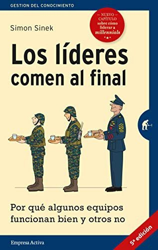

Libros de psicología laboral, liderazgo y equipos
Libros de psicología laboral, liderazgo y equipos en español: 21 libros completos para leer gratis aquí mismo y 10 fichas de títulos actuales.
Los costos invisibles del liderazgo femeninoAvolio Alecchi, Beatrice; Vara Horna, Arístides; Del Carpio Castro, Luis
Los costos invisibles del liderazgo femeninoAvolio Alecchi, Beatrice; Vara Horna, Arístides; Del Carpio Castro, LuisVideojuegos comerciales de realidad virtual inmersiva en neurorrehabilitaciónMartín Nogueras, Ana María; Lillo-Sánchez, Elena; Gomez Mateos, Marta; Bermejo Gil, Beatriz María; Calleja-Caballero, Andrea; Llamas Ramos, Rocío; Orejuela-Rodríguez, Jesús; Sánchez González, Juan Lui
Videojuegos comerciales de realidad virtual inmersiva en neurorrehabilitaciónMartín Nogueras, Ana María; Lillo-Sánchez, Elena; Gomez Mateos, Marta; Bermejo Gil, Beatriz María; Calleja-Caballero, Andrea; Llamas Ramos, Rocío; Orejuela-Rodríguez, Jesús; Sánchez González, Juan LuiLa docencia universitaria en clave neuroeducativa : viejos problemas, nuevos retos: oportunidades para el cambioBueno i Torrens, David, 1965-; Forés i Miravalles, Anna
La docencia universitaria en clave neuroeducativa : viejos problemas, nuevos retos: oportunidades para el cambioBueno i Torrens, David, 1965-; Forés i Miravalles, AnnaInnovación y tradiciones: Psicología del trabajo y de las organizaciones en IberoaméricaPujol, Andrea; Gutiérrez, Inés
Innovación y tradiciones: Psicología del trabajo y de las organizaciones en IberoaméricaPujol, Andrea; Gutiérrez, InésUna nueva agenda para la salud mental en las Américas. Informe de la Comisión de Alto Nivel sobre Salud Mental y COVID-19 de la Organización Panamericana de la Salud
Una nueva agenda para la salud mental en las Américas. Informe de la Comisión de Alto Nivel sobre Salud Mental y COVID-19 de la Organización Panamericana de la SaludOrganizaciones emocionalmente inteligentes : experiencias en evaluación e intervenciónBRESO, EDGAR; Sanchez-Gomez, Martin
Organizaciones emocionalmente inteligentes : experiencias en evaluación e intervenciónBRESO, EDGAR; Sanchez-Gomez, MartinTrabajo comunitario en la ciudad de Córdoba : cuadernos de psicología comunitaria nº 1Barrault, Omar; Chena, Marina; Muro, Julio; Marín, Marcela Cecilia; Trigo, María José; Plaza, Silvia Liliana
Trabajo comunitario en la ciudad de Córdoba : cuadernos de psicología comunitaria nº 1Barrault, Omar; Chena, Marina; Muro, Julio; Marín, Marcela Cecilia; Trigo, María José; Plaza, Silvia LilianaLas organizaciones en el siglo XXI. Un enfoque psicosocial y políticoAna Gálvez Mozo, Enrique Baleriola Escudero, Francisco Javier Tirado Serrano
Las organizaciones en el siglo XXI. Un enfoque psicosocial y políticoAna Gálvez Mozo, Enrique Baleriola Escudero, Francisco Javier Tirado SerranoEstereotipos de género en el trabajoSteffens, Melanie; Viladot, Ma.Àngels
Estereotipos de género en el trabajoSteffens, Melanie; Viladot, Ma.ÀngelsTrabajo y subjetividad: indagaciones clínicas
Trabajo y subjetividad: indagaciones clínicasCTCPS-MAC: Batería para el estudio de las condiciones de trabajo de carácter psicosocialCarrión García, María Ángeles
CTCPS-MAC: Batería para el estudio de las condiciones de trabajo de carácter psicosocialCarrión García, María ÁngelesRecetas de LiderazgoSolanellas Donato, Pere
Recetas de LiderazgoSolanellas Donato, PereGuía para trabajar la historia de vida con niños y niñas: Acogimiento familiar y residencialJiménez Morago, Jesús Miguel; Martínez Cabeza, Rocío; Mata Fernández, Estefanía
Guía para trabajar la historia de vida con niños y niñas: Acogimiento familiar y residencialJiménez Morago, Jesús Miguel; Martínez Cabeza, Rocío; Mata Fernández, EstefaníaLa educación como sistema de bienestar social. Un enfoque interdisciplinar desde el Trabajo Social. Análisis social de la educación en/de la Comunidad Foral de NavarraGorri Goñi, Antonio
La educación como sistema de bienestar social. Un enfoque interdisciplinar desde el Trabajo Social. Análisis social de la educación en/de la Comunidad Foral de NavarraGorri Goñi, AntonioHabilidades directivas, liderazgo y formación de portavoces, febrero 2021Aran Selvaggio, Gina; Febrer Sospedra, Cristina
Habilidades directivas, liderazgo y formación de portavoces, febrero 2021Aran Selvaggio, Gina; Febrer Sospedra, CristinaAtención precoz, crianza y trabajo con familias, febrero 2020Escolà Serra, Alex
Atención precoz, crianza y trabajo con familias, febrero 2020Escolà Serra, AlexVictimización secundaria: efectos psicosociales y legales en personas que presentan procesos judiciales prolongadosReyes Valenzuela, Carlos Marcelo; Benavides Llerena, Gina Morela
Victimización secundaria: efectos psicosociales y legales en personas que presentan procesos judiciales prolongadosReyes Valenzuela, Carlos Marcelo; Benavides Llerena, Gina MorelaPsicología social del trabajo y las relaciones laborales, septiembre 2014Blanch, Josep M; Espuny, Maria Jesus; Gala Durán, Carolina; Martín-Artiles, Antonio; Martinez-Gonzalez, Maite; Pallarés Parejo, Susana
Psicología social del trabajo y las relaciones laborales, septiembre 2014Blanch, Josep M; Espuny, Maria Jesus; Gala Durán, Carolina; Martín-Artiles, Antonio; Martinez-Gonzalez, Maite; Pallarés Parejo, SusanaSociopsicología del trabajo, septiembre 2013Blanch Vila, Josep; Stecher Guzmán, Antonio; Godoy Catalán, Lorena; Santamaria López, Elsa; Tirado, Francisco; Gálvez Mozo, Ana
Sociopsicología del trabajo, septiembre 2013Blanch Vila, Josep; Stecher Guzmán, Antonio; Godoy Catalán, Lorena; Santamaria López, Elsa; Tirado, Francisco; Gálvez Mozo, AnaEl coaching emocionalMireia Cabero Jounou
El coaching emocionalMireia Cabero JounouMemoria, entendimiento, y voluntad. Empresas, que enseñan, y persuaden su buen vso en lo moral, ... ofrecelas a D. Iuan Eustaquio Vicentelo, y Toledo, cavallero de el abito de Santiago. ... El hermano Lorenzo Ortiz, de la Compañia de IesusLorenzo Ortiz
Memoria, entendimiento, y voluntad. Empresas, que enseñan, y persuaden su buen vso en lo moral, ... ofrecelas a D. Iuan Eustaquio Vicentelo, y Toledo, cavallero de el abito de Santiago. ... El hermano Lorenzo Ortiz, de la Compañia de IesusLorenzo OrtizLos líderes comen al finalSimon Sinek
Los líderes comen al finalSimon Sinek
Trabajos de mierdaDavid Graeber
Trabajos de mierdaDavid GraeberDar y recibirAdam Grant
Dar y recibirAdam GrantOriginalesAdam Grant
OriginalesAdam GrantLa sorprendente verdad sobre qué nos motivaDaniel H. Pink
La sorprendente verdad sobre qué nos motivaDaniel H. PinkMadera de líderMario Alonso Puig
Madera de líderMario Alonso PuigEnfócateCal Newport
EnfócateCal NewportInteligencia emocionalDaniel Goleman
Inteligencia emocionalDaniel GolemanLa organización sin miedoAmy C. Edmondson
La organización sin miedoAmy C. EdmondsonTráguese ese sapoBrian Tracy
Tráguese ese sapoBrian TracyTemas relacionados
¿Estás eligiendo carrera?
Haz gratis el test de orientación vocacional de AURZANE: intereses, aptitudes, autoconcepto y hábitos de estudio, con informe completo.